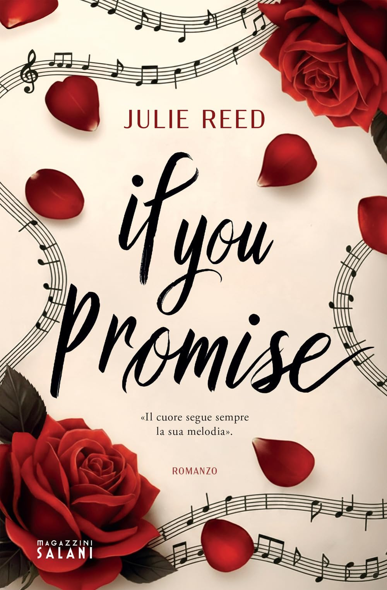

If You Promise
La Trama (Senza Spoiler)
SIA HA SMESSO DI SUONARE, HA SMESSO DI CANTARE. SOLO L’AMORE PUÒ RESTITUIRLE LA VOCE Sia ha quasi diciotto anni e, da quando suo padre è morto, sembra aver rinunciato a ogni sogno, perfino alla musica, che un tempo era tutto il suo mondo. Dietro l’apparente freddezza e l’aria disincantata nasconde un cuore spezzato dal lutto e un segreto che non osa confessare: è innamorata da sempre del migliore amico di suo padre. Nate, trentaquattro anni, è l’uomo che l’ha vista crescere, l’amico che ha giurato ad Aaron di proteggerla a ogni costo, anche se Sia sembra rifiutare ogni suo tentativo di conforto. La tensione tra i due è palpabile, fatta di sguardi, parole non dette e piccoli scontri quotidiani, ma Nate non ne ha ancora compreso il motivo. Quando Sia, stanca di nascondere ciò che prova, decide di svelare i suoi sentimenti, nulla sarà più come prima. Nate tenterà di resistere, travolto dai sensi di colpa, ma la passione e un amore mai provato prima lo spingeranno a cedere. E mentre l’attrazione diventerà impossibile da ignorare, entrambi dovranno affrontare i propri demoni e capire se l’amore può davvero vincere ogni paura.
La Mia Opinione
Ci sono silenzi che pesano più delle parole, e quello di Sia è un silenzio che nasce dal dolore più profondo. In “If You Promise”, Julie Reed ci porta dentro una storia dove la musica, un tempo vita, diventa un ricordo doloroso da cui scappare. Il rumore del lutto e della musica perduta La scrittura della Reed si conferma incredibilmente scorrevole, capace di trascinarti nelle pagine nonostante la delicatezza dei temi trattati. La protagonista, Sia, ha quasi diciotto anni e un cuore frantumato dalla morte del padre, Aaron. È stato emozionante, e a tratti struggente, vedere come il lutto l’abbia portata a rinunciare alla sua voce e al suo talento. Il libro tocca con grande sensibilità il tema della perdita e della difficoltà di ricominciare a sognare quando il mondo che conoscevamo è crollato. Sia e Nate: un amore oltre i confini Il cuore del romanzo è il rapporto tra Sia e Nate, il migliore amico di suo padre. Nate ha trentaquattro anni e ha promesso di proteggerla, ma non immagina che dietro i silenzi di Sia si nasconda un sentimento che dura da sempre. La tensione tra i due è costruita benissimo: fatta di sguardi, scontri quotidiani e segreti pronti a esplodere. Quando Sia decide di rivelare ciò che prova, la dinamica cambia totalmente, portando Nate a lottare tra il senso di colpa e un’attrazione a cui è impossibile resistere. Il peso dell’Age Gap e il “confine” morale Un elemento centrale della trama è l’age gap tra Sia e Nate, ed è qui che la mia esperienza di lettura si è fatta più complessa. Devo essere onesta con voi: la differenza d’età, unita al fatto che Sia sia ancora così vicina alla minore età, mi ha creato un forte senso di disagio. Se il range anagrafico fosse stato diverso, probabilmente avrei digerito meglio la loro dinamica. Ma a rendere tutto ancora più difficile da accettare è il ruolo di Nate: è il migliore amico del padre di Sia, l’uomo che l’ha vista crescere. Durante la lettura, non ho potuto fare a meno di pensare che Nate avesse l’età e la posizione per essere effettivamente suo padre. Questo legame “quasi paterno” e la protezione che avrebbe dovuto garantirle hanno reso il coinvolgimento romantico tra i due un confine molto sottile, che in diversi passaggi mi ha onestamente infastidito. Tuttavia, se riuscite a guardare oltre, troverete una storia di rinascita potente, che dimostra come l’amore possa essere l’unica chiave per ritrovare la propria “voce”
🔥 A colpo d'occhio
- ☕ Atmosfera: Intima e malinconica. Si percepisce il silenzio della musica interrotta e il peso delle cose non dette in una casa segnata dal lutto.
- 🔥 Chimica: Proibita e carica di tensione. È un legame fatto di sguardi rubati e del conflitto interiore di Nate che cerca di resistere a Sia.
- 🌶️ Spicy: Moderato ma intenso. La tensione esplode quando i sentimenti non possono più essere nascosti, ma resta sempre legata all’emozione.
- 😮💨 Emozione: Alta. Il tema della perdita del padre e della “voce” di Sia colpisce dritto al cuore, portandoti a riflettere sul dolore della rinascita.
- 🎃 Vibe: Forbidden Romance / Age Gap / Healing. Sembra di leggere sotto una coperta mentre fuori piove, tra il calore di un amore nuovo e il freddo di un passato che fa male.